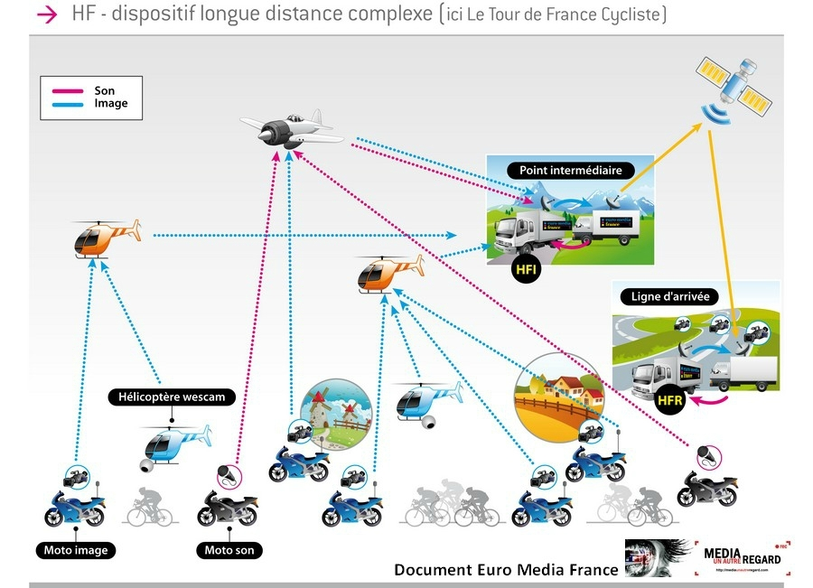

La retransmission est sûrement la partie du sport qui brasse le plus d'argent lorsque l'on voit à quel prix les chaînes de télé s'arrachent les droits pour le Championnat de France ou la Ligue des Champions. Ces retransmissions demandent beaucoup de technologie à chaque fois : entre les caméras, les antennes, les satellites, ...
Néanmoins, il est plus facile de retransmettre certains sports que d'autres. En effet, les sports où le lieu est mobile sont beaucoup plus difficiles à retransmettre que ceux où le lieu est fixe. Par exemple, il est plus facile de retransmettre un match de tennis qu'une course de vélo sur route. Ce qui est intéressant, c'est de regarder comment la technologie a permis de retransmettre ces évenements sportifs qui à la base ne paraîssaient pas simples à retransmettre.
Comme l'explique l'article du Figaro disponible ici, le Tour de France est une énorme machine technologique qu'il faut monter et démonter tous les jours.
Dans la course cycliste, les difficultés sont les suivantes :
Le Tour de France a débuté en 1903. Mais c'est en 1955 que les premiers résumés d'étapes font leurs apparitions. Le direct fait son apparition en 1966. Depuis cette date, pas d'avancées technologiques au niveau de la retransmission. Il faut attendre 2013 pour l'apparition de drônes afin de proposer des images de la course différentes de celles proposées par les hélicoptères. En effet, les hélicoptères permettaient des images aérienne mais ne pouvaient pas s'approcher trop des coureurs pour ne pas les gêner. Le drône, de par sa petite taille gêne moins les coureurs et permet donc une immersion dans la course plus grande. En 2014, c'est le début des caméras embarquées sur les vélos. Ces caméras réalisent des images à l'interieur du peloton et permettent de comprendre notamment les causes de certaines chutes. Cependant, les images de ces caméras sont retransmises post-direct car la puissance de leur antennes ne permet pas d'accèder aux antennes relais. En 2015, c'est le début du GPS Tracking. En colaboration avec Dimension Data, des GPS ont pu être intégrés aux vélos et ainsi géolocaliser les coureurs avec une grande précision.
D'une manière plus générale, la retransmission du Tour de France est très complexe. Les images sont caputurées par des motos, drônes, hélicoptères. Elles sont retransmises à des avions ou hélicoptères relais, qui eux-mêmes retransmettent à un avion qui tourne plus haut. Celui-ci peut retransmettre au satellite. Le satellite peut alors transmettre directement à France Television qui s'occupe de la diffusion nationale. Ce qui est de la diffusion internationale, les images sont envoyées via la fibre à Eurovision à Genève qui va gérer de la redirection vers les diffuseurs internationaux.
Source: http://f1hde.canalblog.com/archives/2017/07/23/35501528.html